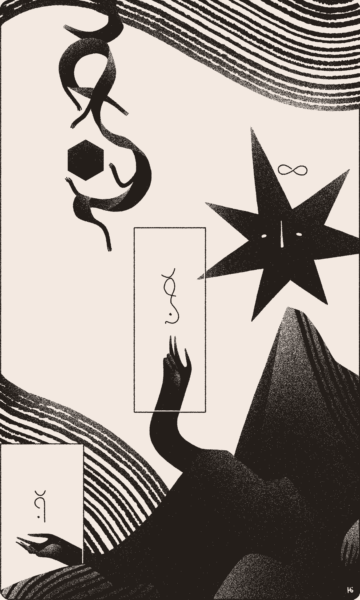
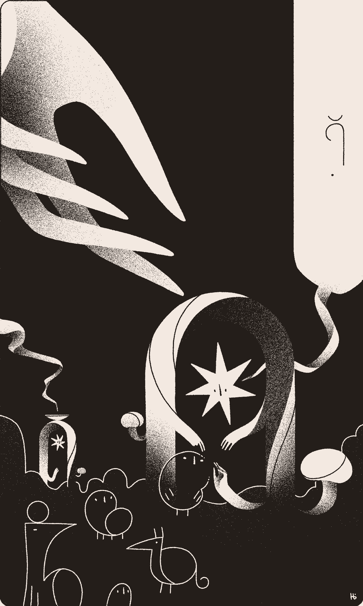

Some say that the Kīrolisks were the first to write Wormrōte when they drew themselves into the sky. The Losī observed their dances, and being so moved by their beauty, rendered them in script for all to see.


Wanting to see that beauty above mirrored below, the Losī drew life into the shapes. This is how the Ilō, sometimes known as the Fā, were born.